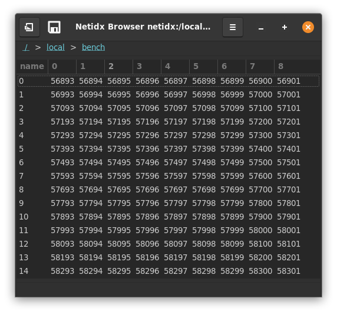

Table

The table widget is used for displaying tabular data from netidx. It is quite flexable, with many bscript properties, so it can be used for many purposes. It supports direct editing, mediated by bscript, and it can even display images, checkboxes, spin buttons, and combo boxes in cells. It's properties are,
Path
The path to the data to be displayed. This is bscript, so if it updates to a new path then the table will redraw that new path.
Sort Mode
This defines how sorting is done. Sorting can be done internally in the browser, in which case the browser will subscribe to every value in the column and will sort the values internally. It can also be done on the publisher side, or disabled entirely. Sort mode has the form,
(null | false | external | <column> | spec)
external: [false, [spec, ...]]
spec: [<column>, ("ascending" | "descending")]
-
null: The table is not sorted by default, but the user can sort by clicking on column headers. Click events will also be generated when the user clicks on the header button, see On Header Click.
-
false: sorting within the browser is disabled, but click events will still be generated when the user clicks on the header buttons. These events could be used to trigger publisher side sorting, or any other desired action. See, On Header Click.
-
external: just like
false, however sort indicators will be shown as specified by the indicator spec. Use this if you implement sorting in the publisher, but want to give the user feedback about what is sorted. Example,[false, [["artist", "descending"], ["album", "descending"]]]Indicates that sorting is happening on the publisher side, and the indicators should be show on the artist and album columns.
-
<column>: by default sort by<column>in descending order. Sorting is processed within the browser and is under the user's control. Click events will also be generated when the user clicks on the header button, see On Header Click. Example,"artist"sort by the artist column descending
-
spec: Same as column, except the sort direction is explicitly specified. Example,
["artist", "ascending"]sort by the artist column ascending
Selection Mode
This controls user selection it can be "single", "multi", or "none"
- "single": The user can only select 1 cell at a time
- "multi": The user can select multiple cells by holding shift while clicking or arrowing.
- "none": The user can't select cells
Column Filter
The column filter allows you to remove columns from the table, and also control their ordering. It has the form,
(null | true | false | list | range)
list: [list-mode, (<col> | [<col>, ...])]
range: [range-mode, [(<n> | "start"), (<m> | "end")]]
list-mode: ("include" | "exclude" | "include_match" | "exclude_match")
range-mode: ("keep" | "drop")
- null: all columns are included
- true: all columns are included
- false: no columns are included
- list: Specify a list of columns or column regexes to include or
exclude.
- "include": col/cols is a list of columns to show. The order of the columns in the list controls the order of the columns that are displayed.
- "exclude": col/cols is a list of columns to hide
- "include_match": col/cols is a list of regex patterns of columns to show
- "exclude_match": col/cols is a list of regex patterns of columns to hide
- range: Specify columns to keep or drop by numeric ranges. Range
patterns apply to the positions of columns in the sorted set.
- "keep": keep the columns specified by the range, drop any others. If the range specifies more columns than exist all columns will be kept. Matched items will be >= start and < end.
- "drop": drop the columns specified by the range, keeping the rest. If the range specifies more columns than exist all the columns will be dropped. Matched items will be < start or >= end.
Examples,
["include", ["col0", "col1", "col2"]]
include only col0, col1, and col2 in that order
["exclude", ["col0"]]
include every column except col0.
["include_match", "\[0-9\]+$"]
include all columns that end in a number
["drop", [10, "end"]]
drop all columns after column 9.
It is important to note that only "include" allows you to control the column order, in all other cases the columns will be sorted lexicographically.
Column Editable
This field has the same format as the column filter, but instead of controling visiblity it controls whether the column can be directly edited (the user can always try ctrl+w to write).
The actual editing is not direct, but must be handled by the On Edit bscript event handler. So this filter is really determining which columns can trigger that event handler.
Column Widths
This expression allows you to control the default widths of columns.
(null | widths)
widths: [[<name>, <w>], ...]
- null: initial column widths are automatically determined
- widths: The list of numeric values specify the initial width of the corresponding column.
Example,
[["col0", 300], ["col1", 200], ["col2", 50]]
Columns Resizable
if true then the user can resize columns, if false they cannot.
Column Types
Column types allows you to use columns that are not text as well as configure additional properties of text columns such as background and foreground colors. You don't have to mention every column in the column types expression. Any columns you don't mention will be plain text columns.
(null | column_types)
null: a default column type specification is generated that
displays all the columns in the filtered model as text.
column_types: [[<name>, typename, properties], ...]
typename: ("text" | "toggle" | "image" | "combo" | "spin" | "progress" | "hidden")
common: common properties shared by many columns
["source", <column-name>],
optional, the source column that contains the data for
each row. If not specified the default is this column
(<name>).
["background", <color-string>],
optional, statically specify the background color of the
cell. same format as the "foreground" attribute.
["background-column", <column-name>],
optional, the column containing the background color of
each row in the same format as described in the
"foreground" attribute.
properties: match typename
"text": [
common,
["foreground", <color-string>],
optional, statically specify the foreground text
color. Any string understood by pango_parse_color is
understood here. That includes css color names, and hex
strings in various formats.
["foreground-column", <column-name>],
optional, the column containing the foreground color of
each row, same format as for the "foreground" attribute.
]
"toggle": [
common,
["radio", (true | false)],
optional, whether to render the toggle as a check button
or a radio button.
true: the entire column is radio buttons, only one row may
be selected at any one time
false: the entire column is check buttons, which may be
individually toggled.
<column-name>: the specified boolean column controls
whether or not the toggle in each row is a radio or a
check button.
["radio-column", <column-name>]
optional, the column containing the "radio" property for
each row
]
"image": [
common,
]
"combo": [
common,
["choices", [<choice>, ...]],
The available choices globally for the entire
column. One of choices or choices-column must be
specified
["choices-column", <column-name>]
The column containing the "choices" attribute
for each row. One of choices, or choices-column must be
specified.
["has-entry", (true | false)],
optional. Should the column have an entry in addition to
the combo box menu? If true the user will be able to
enter any text they want, even if it isn't a valid
choice. If false only valid choices may be entered.
["has-entry-column", <column-name>]
optional, the column containing the has-entry attribute for each row.
]
"spin": [
common,
["min", <n>],
optional, if not specified 0 is assumed.
["min-column", <column-name>]
optional, the column containing the min attribute for each row
["max", <n>],
optional, if not specified 1 is assumed.
["max-column", <column-name>]
optonal, the column containing the max attribute for each row
["increment", <n>],
optional, the amount the value changes with each spin button press
["increment-column", <column-name>],
optional, the column containg the increment property
["page-increment", <n>]
optional, the amount the value changes on a page increment
["page-increment-column", <column-name>],
optional, the column containg the page-increment property
["climb-rate", <n>],
optional. How fast the value should change if the user
holds the + or - button down.
["climb-rate-column", <column-name>]
optional, the column specifying the climb-rate attribute for each row
["digits", <n>],
optional. The number of decimal places to display.
["digits-column", <column-name>]
optional. The column specifying the digits attribute for each row.
]
"progress": [
common,
["activity-mode", (true | false)],
optional, default false. Operate the progressbar in
activity mode (see the ProgressBar widget).
["activity-mode-column", <column-name>]
optional, the column specifying the activity mode for each row.
["text", <text>],
optional, display static text near the progress bar
["text-column", <column-name>],
optional, display text from <column-name> near the
progress bar.
["text-xalign", <n>],
optional, set the horizontal alignment of the displayed
text. 0 is full left, 1 is full right.
["text-xalign-column", <column-name>]
optional, the column specifying the text-xalign property for each row
["text-yalign", <n>],
optional, set the vertical alignment of the displayed
text. 0 is top, 1 is bottom.
["text-yalign-column", <column-name>]
optonal, the column specifying the text-yalign property for each row
["inverted", (true | false)],
optional, invert the meaning of the source data
["inverted-column", <column-name>]
optional, the column specifying the inverted property for each row
]
"hidden":
hidden is a special column type that has no properties. It
is used to hide data columns that other visible columns
depend on (so they must appear in the model), but that you
don't want to show to the user.
all the properties of progress are optional. If none are set the entire properties array may be omitted
The column type specification interacts with the column filter, in that a column type specification may name another column as the source of it's data or of a given property and the column filter may remove that column. If that occurrs the column filter takes precidence. The specified typed column will be displayed, but won't get any data if it's underlying column is filtered out.
For properties that can be statically specified and loaded from a
column, if both ways are specified then the column will override the
static specification. If the column data is missing or invalid for a
given row, then the static specification will be used. e.g. if I
specify both ["text-yalign", 1] and ["text-yalign-column", "foo"],
then 1 will be used if the data from foo is missing, otherwise foo
will be used.
Examples,
[
["images", "image", [["source", "000"]]],
["checkboxes", "toggle", [["source", "001"]]],
["combos", "combo", [["source", "002"], ["choices-column", "003"]]],
["004", "hidden", []],
["005", "hidden", []]
]

In this example we start with a container sheet, and we construct a
table with columns that don't exist in the underlying data (images,
checkboxes, and combos). These columns reference data in the
underlying table via the source attribute, and in the combos column
the choices also come from an underlying column.
Meanwhile we hide some of the underying columns. In a real application we might use these features to create a view of a dataset that is very different from what the underying table looks like "raw".
Row filter
The row filter has the same format as the column filter, except it operates on the rows of the table.
Show Row Name
By default the first column in the table is the name of the row. If this field is false then the row name will not be shown.
On Activate
This event is triggered when the user double clicks a row or presses
enter in a row. The event() function will yield null when that
happens.
On Select
This event is triggered when the user selects one or more cells in the
table. event() will yield the new selection as a list of paths.
On Edit
This event is triggered when the user edit a cell in an editable
column. event() will yield a pair of the path of the edited cell and
the new value.
On Header Click
This event is triggered when the user clicks on a column
header. event() will yield the name of the column who's header was
clicked.
The Full Table Editor